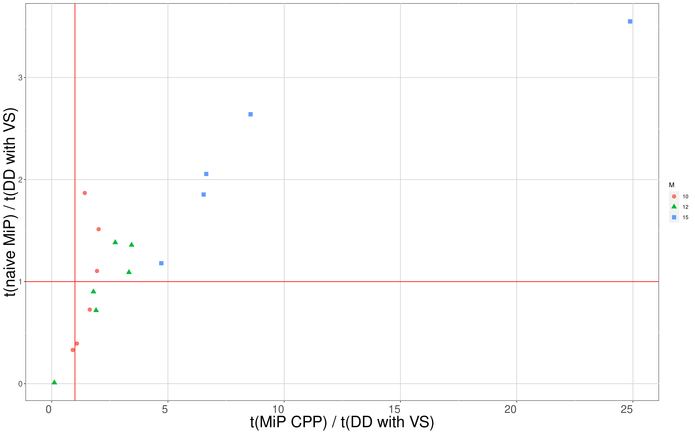
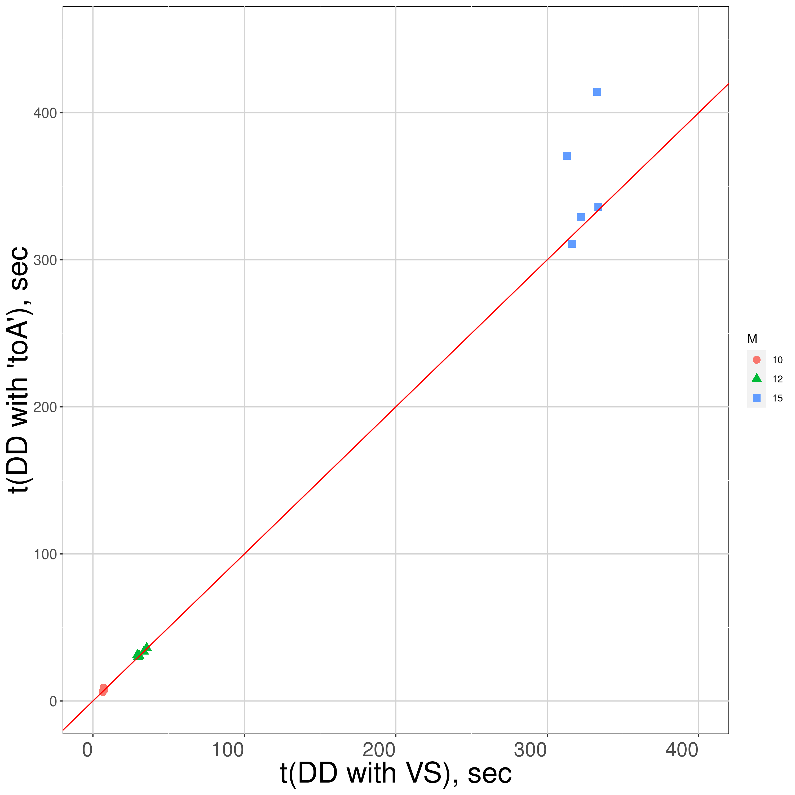
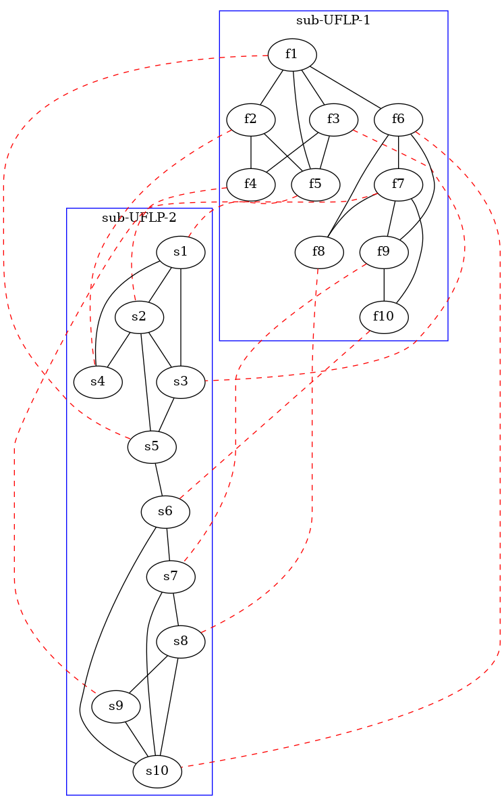

A note on special type of instances.
I have generated a tiny dataset of special kind of instances. Let me briefly discuss the numerical results and then come back to the instances generation process with a few more details.
1. Numerical results.
In the following figures I will compare runtimes and DD sizes for instances of different sizes, characterized by \(M\) (number of points per 'cluster'). The number of clusters is fixed at \(n=2\) in all these experiments — it seems it gives me the right balance between the instance complexity and reasonable runtimes for an experiment. I tried to generate instances with \(M\) = 10, 12, and 15.
This is somewhat sensitive to hardware, but I think I have captured how it scales, and here is the story I would propose to tell.
First, runtime for MIP-based approaches (which are both naive MiP and CPP MIP) tends to be higher than the DD-based approaches. For smaller instances, naive MiP might be very fast, but it scales quite poorly:

Horizontal and vertical lines here indicate levels where MIP-based approaches run in the same time as the proposed heuristic, involving variable sequences.
Then, if we consider DD-based approaches only, due to the special structure of my problems, to-A heuristic consistently gives significantly larger intersection BDDs (there is only one exception):

However, this translates into meaningful gains in runtime only for large enough instances, more or less starting from \(M=15\) (note that the runtime difference is not large at first).

Finally, here is the raw data on my seventeen experiments:
| experiment # | M | N | A | t MIP | t MIP-CPP | t DD VS | t DD toA | int DD VS | int DD toA |
|---|---|---|---|---|---|---|---|---|---|
| 1 | 10 | 40 | 122.0 | 7.72 | 12.96 | 6.98 | 9.12 | 3,207 | 23,087 |
| 4 | 10 | 40 | 122.0 | 4.70 | 9.80 | 6.47 | 6.04 | 2,967 | 3,207 |
| 7 | 10 | 40 | 122.0 | 12.99 | 10.73 | 6.96 | 7.19 | 3,407 | 6,143 |
| 10 | 10 | 40 | 122.0 | 2.50 | 6.76 | 7.51 | 7.38 | 3,319 | 4,767 |
| 13 | 10 | 40 | 122.0 | 10.65 | 14.75 | 7.03 | 8.82 | 3,447 | 20,511 |
| 16 | 10 | 40 | 122.0 | 2.66 | 6.91 | 6.82 | 7.33 | 3,315 | 10,291 |
| 2 | 12 | 48 | 174.0 | 42.17 | 77.49 | 30.46 | 30.81 | 9,335 | 28,191 |
| 5 | 12 | 48 | 174.0 | 26.56 | 47.41 | 29.44 | 31.49 | 11,419 | 27,707 |
| 8 | 12 | 48 | 174.0 | 32.49 | 100.27 | 29.85 | 30.10 | 11,343 | 15,871 |
| 11 | 12 | 48 | 174.0 | 24.20 | 65.98 | 33.67 | 33.59 | 12,711 | 16,951 |
| 14 | 12 | 48 | 174.0 | 28.27 | 108.18 | 2,764.70 | 4,184.61 | 183,113 | 14,718 |
| 17 | 12 | 48 | 174.0 | 48.35 | 128.33 | 35.53 | 36.09 | 14,471 | 16,383 |
| 3 | 15 | 60 | 278.0 | 393.64 | 1,577.92 | 333.67 | 336.02 | 84,231 | 111,727 |
| 6 | 15 | 60 | 278.0 | 596.50 | 2,138.01 | 322.17 | 328.93 | 70,911 | 100,151 |
| 9 | 15 | 60 | 278.0 | 1,124.07 | 7,852.99 | 316.45 | 310.77 | 75,023 | 91,055 |
| 12 | 15 | 60 | 278.0 | 879.19 | 2,830.21 | 332.92 | 414.29 | 114,879 | 770,117 |
| 15 | 15 | 60 | 278.0 | 642.83 | 2,110.46 | 312.96 | 370.61 | 90,319 | 507,975 |
(Experiments are grouped by instance size, \(M\).) Here I have:
M- number of points within each sub-instance.
N- resulting number of points in the instance,
A- resulting number of edges in the instance,
t MIP- runtime for a naive MIP, sec.
t MIP CPP- runtime for CPP MIP, sec.
t DD VS- runtime for the proposed heuristic, sec: formulate CPP + align with VarSeq + build intersection BDD + solve shortest-path.
t DD toA- runtime for an alternative DD-based approach, sec: formulate CPP + align to the first diagram + build intersection BDD + solve shortest-path.
int DD VS- resulting intersection BDD for the proposed heuristic no. of nodes,
int DD toA- resulting intersection BDD if we just align to the first diagram, no. of nodes.
All the runtimes involve the full pipeline, from the input data to the optimal objective value.
2. Instance description
Now, let me discuss how do I generate instances to achieve these results. Parameters shared by all instances are:
- \(n=2\) sub-instances per instance,
- \(L=0.35\) edge sparsity parameter,
- Note that the number of nodes and edges are the same for each instance of the given size!
- Instance type and sub-instances link.
2.1. Instance structure
Each instance represents two UFLP sub-instances. Within each sub-instance, I have two 'clusters' \(M\) points each, connected with a single edge. Therefore, for example, for \(M=12\) I will have \(2M=24\) points per sub-instance, and \(2M\times 2=48\) points in the whole instance.
The number of edges \(A\) is determined by the sparsity parameter \(L\) and the number of nodes. In particular, I am adding edges until I have the smallest number of edges \(a\) within each cluster satisfying:
\[L \leq 1 - \frac{a}{n(n-1)/2}.\]
For example, for \(n=12\) points per cluster, I can have \(n(n-1)/2=66\) edges for a fully connected subgraph. I have a threshold number of edges in a cluster \(a\) determined by:
\[L=0.35 = 1 - \frac{a}{66},\]
which gives me \(a=0.65\times 66\rightarrow 43\) edges per cluster, and hence 43*2+1 = 87 edges per sub-instance and 87*2=174 edges per instance.
The graph topology looks as follows, here is an example instance with \(M=5\) (to make it more or less intelligible):

Note the sub-instances linking rule. What I mean by, e.g., f1 and s5 are 'linked' (depicted with a dotted line between f1 and s5 in the figure) is that:
- If a facility is located in point
f1, a facility would need to be necessarily located ats5. - Also, no facility at
f1requires no facility ats5.
So, I connect the points by-cluster, in reverse order. For example, point f1 (the first point of the first cluster, first sub-instance) is connected to s5 (the last point of the first cluster, the second sub-instance). Then, f2 is linked to s4, and so on. I repeat the same process for the second clusters in both sub-instances: f6 is linked to s10, f7 – to s9, and so on. I like this strange rule because it immediately suggests that if I want to align the second diagram to the first one (which is the naive alternative approach to align two BDDs), I would need to reverse the order of points within each cluster!
2.2. Costs generation
Finally, I generate costs as follows:
- Location costs are uniformly random from \([4.5, 5.5]\).
- Overlap costs are:
- \(f_0=200\) (always – cost of NOT covering a point),
- \(f_1 = 0.0\) (always – cost of covering a point exactly once),
- \(f_a\) for all relevant \(a>1\) are uniformly random from \([-100, 100]\).
I do feel that the runtimes are sensitive to the costs. It seems having small location costs somewhat makes all the solvers focus on overlap costs, which are wildly different depending on the number of overlaps. Not sure this is the best approach, but this is what I have settled with at the moment.